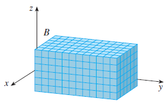
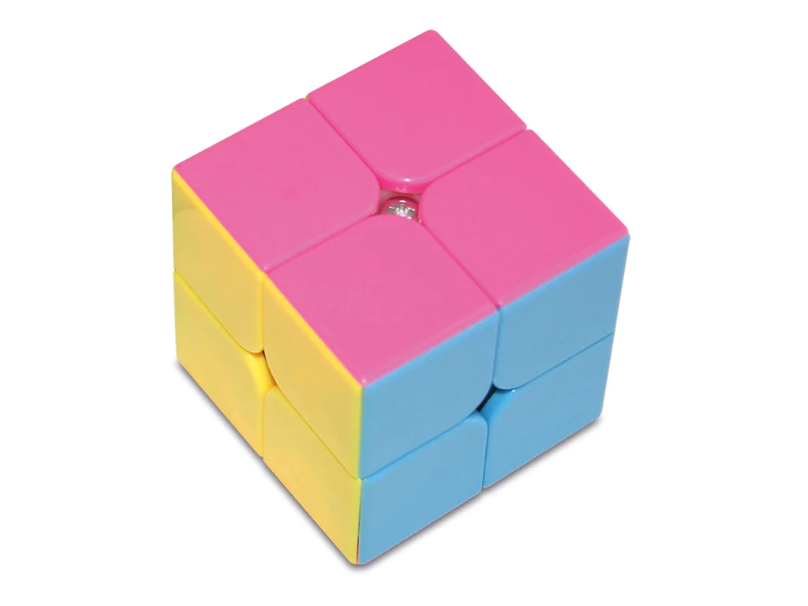

Integrales triples
Contents
4.5. Integrales triples#
4.5.1. Integración de Riemann 3D#
Todo el análisis que hemos hecho en la Sección Integrales dobles se extiende directamente de dos a tres variables. En este caso, en lugar de dividir el dominio en rectángulos y hacer que el tamaño del dichos rectángulos tienda a \(0\), lo que hacemos es dividir el dominio de partida (en 3D) en cubos, evaluar la función que queremos integrar en algún punto de cada cubo y, a continuación, hacer que el tamaño del cubo tienda a \(0\).
Queremos definir
donde \(Q\) es un dominio tridimensional que suponemos divisible en cubos (si no fuera así, aproximaríamos \(Q\) por una suma de cubos) y \(f:\mathbb{R}^3 \to \mathbb{R}\) una función que suponemos, por simplicidad, continua en \(Q\).
Es decir, \(Q\) sería algo parecido a lo que mostramos en la siguiente imagen (tomada de esta página web ):
{kind=link}
El volumen del i-ésimo cubo será
{kind=link}
Entonces, eligiendo un punto \(\left(x_{i},y_{i},z_{i}\right)\), en cada cubo de la partición, podemos definir la suma de Riemann como
Si ahora definimos la norma de la partición, \(\|\Delta\|\), como la longitud de la diagonal más larga de los \(N\) cubos de la partición, tomando el límite \(\|\Delta\| \to 0\), llegamos a la definición de integral de Riemann en \(Q\):
Definition (Integral de Riemann para una función de tres variables )
Supongamos una región \(Q\) contenida en \(\mathbb{R}^{3}\) y descompuesta en \(N\) cubos, \(V_{i}\), \(i=1,2,...,N\). Sea \(f\) una función real continua definida sobre \(Q\). Definimos la integral triple de \(f\) sobre \(Q\) como el siguiente límite, si existe:
Las propiedades de las integrales triples son las mismas que para las dobles. Las recordamos a continuación:
Property (Propiedades de las integrales dobles)
Sean \(f\) y \(g\) continuas en una región cerrada y acotada \(R\) del plano, y sea \(c\) una constante.
\(\displaystyle\int\int_Q\int cf(x,y,z)\,dV=c\int\int_Q\int f(x,y,z)\,dV\).
\(\displaystyle\int\int_Q\int \left(f(x,y,z)\pm g(x,y,z)\right)\,dV=\int\int_Q\int f(x,y,z) \,dA\pm \int\int_Q\int g(x,y,z) \,dV\).
Si \(Q\) es la unión de dos subregiones, \(Q_1\) y \(Q_2\), que no se sobreponen, entonces \(\displaystyle\int\int_Q\int f(x,y,z)\,dV=\int\int_{Q_1}\int f(x,y,z)\,dV+\int\int_{Q_2}\int f(x,y,z)\,dV\).
4.5.2. Integrales triples iteradas#
Theorem (Evaluación mediante integrales iteradas)
Sea \(f\) una función continua definida sobre la siguiente región sólida \(Q\):
donde \(h_{1}\), \(h_{2}\), \(g_{1}\) y \(g_{2}\) son funciones continuas. Entonces,
Example (Evaluación de una integral triple iterada)
Evaluar la integral triple iterada
Solución:
En primer lugar, realizamos la integral más interna (respecto a \(z\)):
Vamos a continuación con la segunda integral:
Por último, la tercera integral, ahora respecto a \(x\):
Vamos a hacer este mismo ejemplo aprovechando la potencia de Sympy:
import sympy as sp
x, y, z = sp.symbols('x y z', real=True)
f = sp.Lambda((x,y,z),sp.exp(x)*(y+2*z))
integral = sp.integrate(f(x,y,z), (z,0,x+y), (y, 0, x), (x, 0, 2))
display(integral)
4.5.3. Centro de masas y momentos de inercia#
Vamos a ver una aplicación del cálculo de integrales para funciones que dependen de tres variables. Hablaremos del centro de masa y de los momentos de inercia (de primer y de segundo orden).
El centro de masas para un cuerpo que ocupa la región \(Q\), y cuya densidad de masa viene dada por la función \(\rho(x,y,z)\), es un punto geométrico que se comporta como si en él estuviera aplicada la resultante de todas las fuerzas aplicadas sobre el sistema. Para un cuerpo, salvo en situaciones excepcionales (campos gravitacionales no uniformes), coincide con el centro de gravedad. También puede aplicarse a sistemas discretos (por ejemplo, órbitas planetarias o movimientos de moléculas). Aquí puedes encontrar más información:
¡Pues vamos a aprender a calcularlo utilizando la integración sobre el cuerpo \(Q\)!
Definition (Centro de masas y momentos de primer orden )
Consideramos un cuerpo sólido que ocupa la región \(Q\) y cuya densidad de masas viene dada por la función \(\rho(x,y,z)\). Definimos
Masa del sólido: \(\displaystyle m = \int\int_{Q}\int\rho(x,y,z)\, dV\).
Momentos de primer orden:
Primer momento con respecto al plano \(YZ\): \(\displaystyle\quad M_{yz} = \int\int_{Q}\int x\rho(x,y,z)\, dV\).
Primer momento con respecto al plano \(XZ\): \(\displaystyle\quad M_{xz} = \int\int_{Q}\int y\rho(x,y,z)\, dV\).
Primer momento con respecto al plano \(XY\): \(\displaystyle\quad M_{xy} = \int\int_{Q}\int z\rho(x,y,z)\, dV\).
Centro de masas. Es el punto de \(Q\) con coordenadas \(\left(\bar{x}, \bar{y}, \bar{z}\right)\), donde
\(\displaystyle \bar{x} = \frac{M_{yz}}{m}\),
\(\displaystyle \bar{y} = \frac{M_{xz}}{m}\),
\(\displaystyle \bar{z} = \frac{M_{xy}}{m}\).
Ahora vamos a definir los momentos de segundo orden, también llamados momentos de inercia:
Definition (Momentos de segundo orden (momentos de inercia) )
Momento de inercia con respecto al eje \(X\): \(\displaystyle \quad I_{x} = \int\int_{Q}\int \left(y^2 + z^2 \right) \rho(x,y,z)\, dV\).
Momento de inercia con respecto al eje \(Y\): \(\displaystyle \quad I_{y} = \int\int_{Q}\int \left(x^2 + z^2 \right) \rho(x,y,z)\, dV\).
Momento de inercia con respecto al eje \(Z\): \(\displaystyle \quad I_{z} = \int\int_{Q}\int \left(x^2 + y^2 \right) \rho(x,y,z)\, dV\).
Vamos a comentar un truco muy usado. Si tenemos que calcular los tres momentos de inercia, podemos ahorrar tiempo de ejecución (ya sea en papel o en CPU) si calculamos:
\(\displaystyle \quad I_{xy} = \int\int_{Q}\int z^2 \, \rho(x,y,z)\, dV\),
\(\displaystyle \quad I_{xz} = \int\int_{Q}\int y^2 \, \rho(x,y,z)\, dV\),
\(\displaystyle \quad I_{yz} = \int\int_{Q}\int x^2 \, \rho(x,y,z)\, dV\),
y luego, aplicando la aditividad de la integral, hacemos las sumas correspondientes:
\(I_{x} = I_{xz} + I_{xy}\),
\(I_{y} = I_{yz} + I_{xy}\),
\(I_{z} = I_{xz} + I_{yz}\).
Example (Masa y momentos para un cubo de Rubik)
Vamos a calcular, mediante integración, el centro de masa y los momentos de orden 2 de un cubo tipo Rubik 2x2 (imagen extraída de la página web de la tienda de puzzles y juegos de mesa, Doctor Panush) en el que suponemos que cada uno de los ocho cubitos está hecho de un plástico diferente y tienen, por tanto, diferente densidad: de 1 a 8 g/cm\(^3\) (la densidad exacta en cada cubito puede inferirse de la integral en la que se calcula \(m\)).
El cubo ocupa el dominio \([0,4]^{3}\), con unidades en cm (es decir, cada arista pequeña mide 2 cm).
{kind=link}
Escribimos la fórmula para el cálculo de \(M_{yz}\), pero dejaremos éste y el resto de los cálculos para Sympy, ¡que para eso está!
import sympy as sp
import numpy as np
x, y, z = sp.symbols('x y z', real=True)
m = ( sp.integrate(1, (z,0,2), (y, 0, 2), (x, 0, 2)) + sp.integrate(2, (z,2,4), (y, 0, 2), (x, 0, 2))
+ sp.integrate(3, (z,0,2), (y, 0, 2), (x, 2, 4)) + sp.integrate(4, (z,2,4), (y, 0, 2), (x, 2, 4))
+ sp.integrate(5, (z,0,2), (y, 2, 4), (x, 0, 2)) + sp.integrate(6, (z,2,4), (y, 2, 4), (x, 0, 2))
+ sp.integrate(7, (z,0,2), (y, 2, 4), (x, 2, 4)) + sp.integrate(8, (z,2,4), (y, 2, 4), (x, 2, 4)) )
print('m: ',m)
Myz = ( sp.integrate(x, (z,0,2), (y, 0, 2), (x, 0, 2)) + sp.integrate(2*x, (z,2,4), (y, 0, 2), (x, 0, 2))
+ sp.integrate(3*x, (z,0,2), (y, 0, 2), (x, 2, 4)) + sp.integrate(4*x, (z,2,4), (y, 0, 2), (x, 2, 4))
+ sp.integrate(5*x, (z,0,2), (y, 2, 4), (x, 0, 2)) + sp.integrate(6*x, (z,2,4), (y, 2, 4), (x, 0, 2))
+ sp.integrate(7*x, (z,0,2), (y, 2, 4), (x, 2, 4)) + sp.integrate(8*x, (z,2,4), (y, 2, 4), (x, 2, 4)) )
print('Myz: ', Myz)
Mxz = ( sp.integrate(y, (z,0,2), (x, 0, 2), (y, 0, 2)) + sp.integrate(2*y, (z,2,4), (x, 0, 2), (y, 0, 2))
+ sp.integrate(3*y, (z,0,2), (x, 2, 4), (y, 0, 2)) + sp.integrate(4*y, (z,2,4), (x, 2, 4), (y, 0, 2))
+ sp.integrate(5*y, (z,0,2), (x, 0, 2), (y, 2, 4)) + sp.integrate(6*y, (z,2,4), (x, 0, 2), (y, 2, 4))
+ sp.integrate(7*y, (z,0,2), (x, 2, 4), (y, 2, 4)) + sp.integrate(8*y, (z,2,4), (x, 2, 4), (y, 2, 4)) )
print('Mxz: ', Mxz)
Mxy = ( sp.integrate(z, (y, 0, 2), (x, 0, 2), (z,0,2)) + sp.integrate(2*z, (x, 0, 2), (y, 0, 2), (z,2,4))
+ sp.integrate(3*z, (x, 2, 4), (y, 0, 2), (z,0,2)) + sp.integrate(4*z, (x, 2, 4), (y, 0, 2), (z,2,4))
+ sp.integrate(5*z, (x, 0, 2), (y, 2, 4), (z,0,2)) + sp.integrate(6*z, (x, 0, 2), (y, 2, 4), (z,2,4))
+ sp.integrate(7*z, (x, 2, 4), (y, 2, 4), (z,0,2)) + sp.integrate(8*z, (x, 2, 4), (y, 2, 4), (z,2,4)) )
print('Mxy: ', Mxy)
CM = np.array([np.float64(Myz/m),np.float64(Mxz/m),np.float64(Mxy/m)])
print('Centro de masas: ', CM)
Iyz = ( sp.integrate(x**2, (z,0,2), (y, 0, 2), (x, 0, 2)) + sp.integrate(2*x**2, (z,2,4), (y, 0, 2), (x, 0, 2))
+ sp.integrate(3*x**2, (z,0,2), (y, 0, 2), (x, 2, 4)) + sp.integrate(4*x**2, (z,2,4), (y, 0, 2), (x, 2, 4))
+ sp.integrate(5*x**2, (z,0,2), (y, 2, 4), (x, 0, 2)) + sp.integrate(6*x**2, (z,2,4), (y, 2, 4), (x, 0, 2))
+ sp.integrate(7*x**2, (z,0,2), (y, 2, 4), (x, 2, 4)) + sp.integrate(8*x**2, (z,2,4), (y, 2, 4), (x, 2, 4)) )
Ixz = ( sp.integrate(y**2, (z,0,2), (x, 0, 2), (y, 0, 2)) + sp.integrate(2*y**2, (z,2,4), (x, 0, 2), (y, 0, 2))
+ sp.integrate(3*y**2, (z,0,2), (x, 2, 4), (y, 0, 2)) + sp.integrate(4*y**2, (z,2,4), (x, 2, 4), (y, 0, 2))
+ sp.integrate(5*y**2, (z,0,2), (x, 0, 2), (y, 2, 4)) + sp.integrate(6*y**2, (z,2,4), (x, 0, 2), (y, 2, 4))
+ sp.integrate(7*y**2, (z,0,2), (x, 2, 4), (y, 2, 4)) + sp.integrate(8*y**2, (z,2,4), (x, 2, 4), (y, 2, 4)) )
Ixy = ( sp.integrate(z**2, (y, 0, 2), (x, 0, 2), (z,0,2)) + sp.integrate(2*z**2, (x, 0, 2), (y, 0, 2), (z,2,4))
+ sp.integrate(3*z**2, (x, 2, 4), (y, 0, 2), (z,0,2)) + sp.integrate(4*z**2, (x, 2, 4), (y, 0, 2), (z,2,4))
+ sp.integrate(5*z**2, (x, 0, 2), (y, 2, 4), (z,0,2)) + sp.integrate(6*z**2, (x, 0, 2), (y, 2, 4), (z,2,4))
+ sp.integrate(7*z**2, (x, 2, 4), (y, 2, 4), (z,0,2)) + sp.integrate(8*z**2, (x, 2, 4), (y, 2, 4), (z,2,4)) )
print('Ix: ', Ixz+Ixy)
print('Iy: ', Ixy+Iyz)
print('Iz: ', Ixz+Iyz)
m: 288
Myz: 640
Mxz: 704
Mxy: 608
Centro de masas: [2.22222222 2.44444444 2.11111111]
Ix: 3712
Iy: 3456
Iz: 3840
Ejercicio propuesto:
Calcula el centro de masas y los momentos de inercia para un cuerpo que ocupa el cubo unidad, \([0,1]^3\), y cuya densidad de masa en el punto \((x,y,z)\) es proporcional al cuadrado de su distancia desde el origen. Es decir:
para alguna constante \(k\in\mathbb{R}\).